Shots Fired on Valentine St.
December 2025 · The Office On Perry · Downtown Dallas · One-night exhibition
Shots Fired on Valentine St. was a one-night exhibition in downtown Dallas, December 2025 — the first solo show by Keo, marking the public debut of a body of work developed over three years. The exhibition brought together paintings, mixed-media objects, and a written screenplay for an animated short film of the same title.
At the center of the work is the Blue Cowboy — a figure who appears across the paintings and anchors the companion screenplay, The Blue Cowboy & The Blob. He arrives in each piece already armored: hat pulled low, eyes never visible, body rendered in a blue that reads as both color and emotional temperature. He is a figure built for an exposure he hopes never arrives.
Across the exhibition, the Blue Cowboy moves through thresholds — a parking lot at night, an abandoned rooftop, a first night in a new home — carrying the same posture into each. Alongside him, a recurring neon sign reads SFOVS. The sign is the show's constant: a place-marker that keeps cycling regardless of who has left or arrived.
Works on canvas and pillowcase investigate the same tension through different surfaces. First Night At Home transfers the red glow of signage onto a domestic object, softening the signal into fabric. Cloud To Soil bends language into mass, using the physical weight of paint to hold what words can't. Process — the studio drop cloth, laid flat for months — reframes accumulated evidence as the main event, every mark a record of a decision made elsewhere in the room.
The screenplay extends the visual work into time. In it, the Blue Cowboy attempts to build a signal, a blob of color answers him, and the harmony between them becomes the thing that breaks them both. The written piece appeared in the show as an object — staged with candles and a single rose — and is included here in full.
Taken together, the exhibition is a study of what it costs to be reached. The work is not about a specific loss. It is about the architecture built around the possibility of one.
Photographs from the evening of the exhibition. The Office On Perry, downtown Dallas, December 2025.
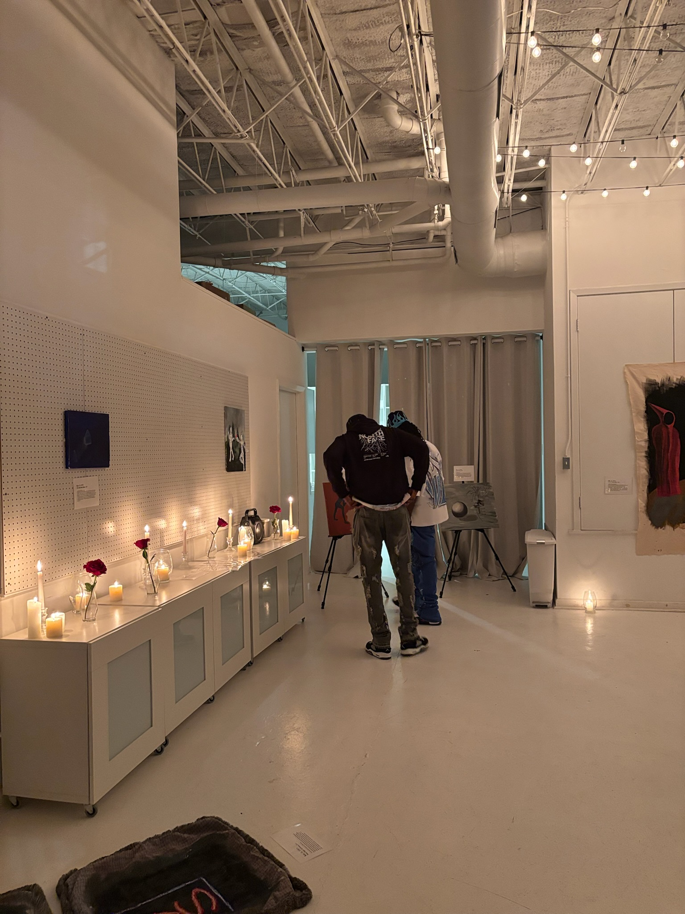
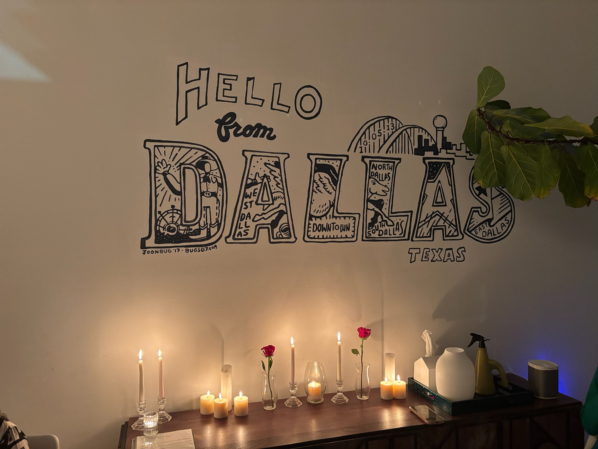
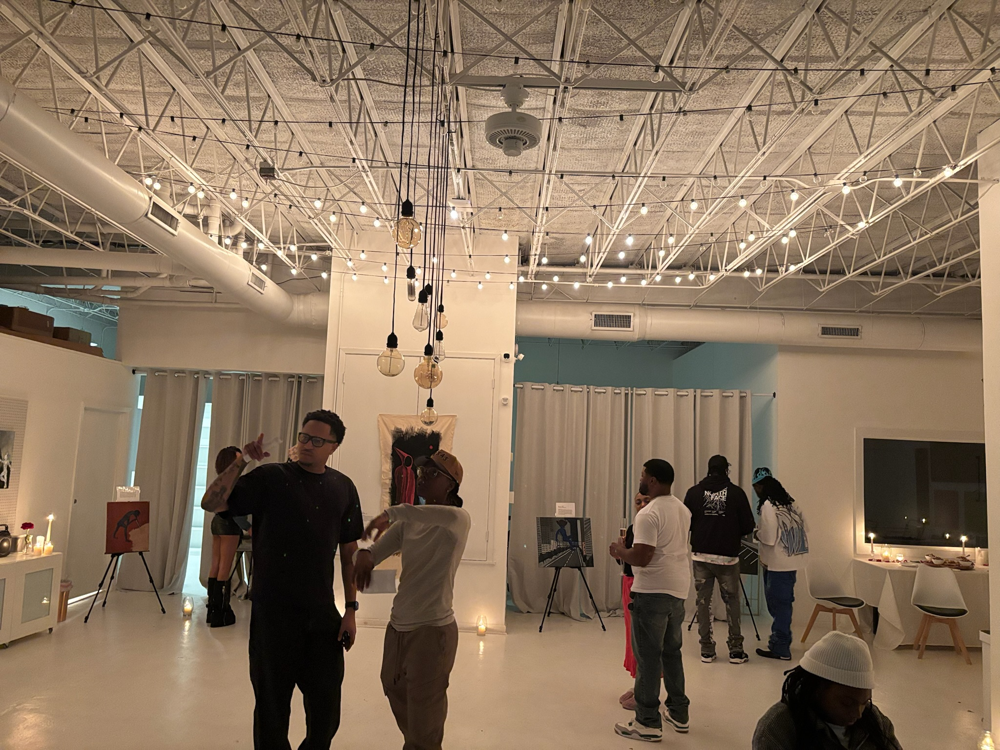
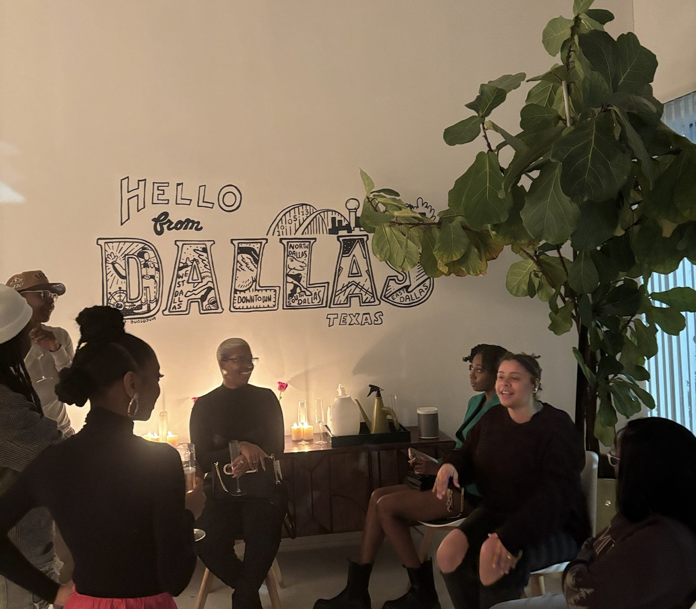
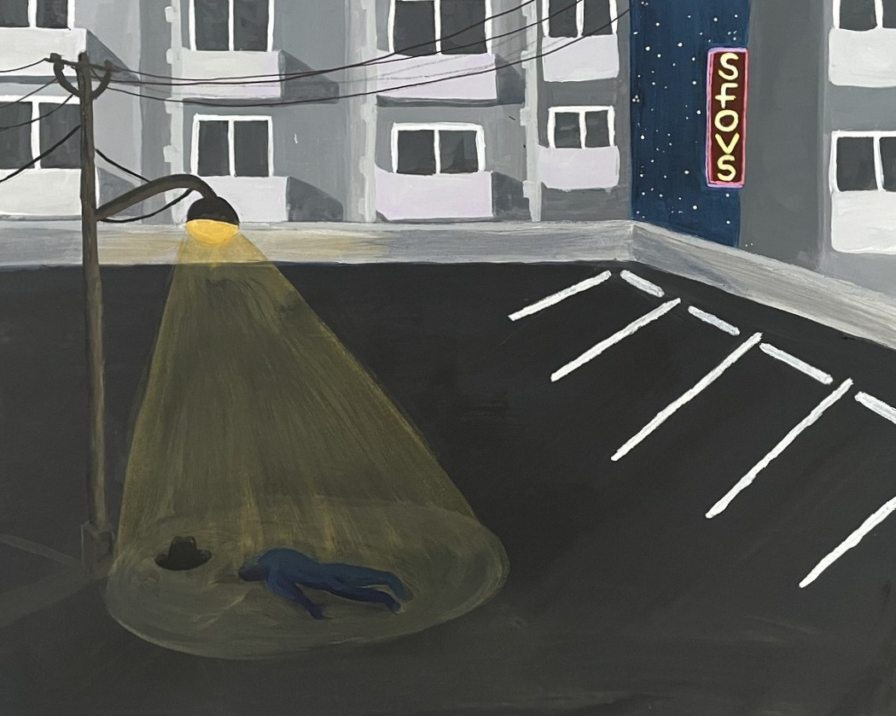
First Night On The Rooftop
2025
Acrylic on canvas
Keo renders a lone figure in blue beneath a streetlight, the body flattened against an empty parking lot. Acrylic is applied in deliberate layers: muted tones for the pavement and buildings, sharper edges for the neon sign that continues its cycle overhead. The composition holds a single moment of stillness, the figure positioned in a way that suggests pause rather than motion. By isolating form against urban infrastructure, the work gestures toward vulnerability and exposure without dramatizing it.
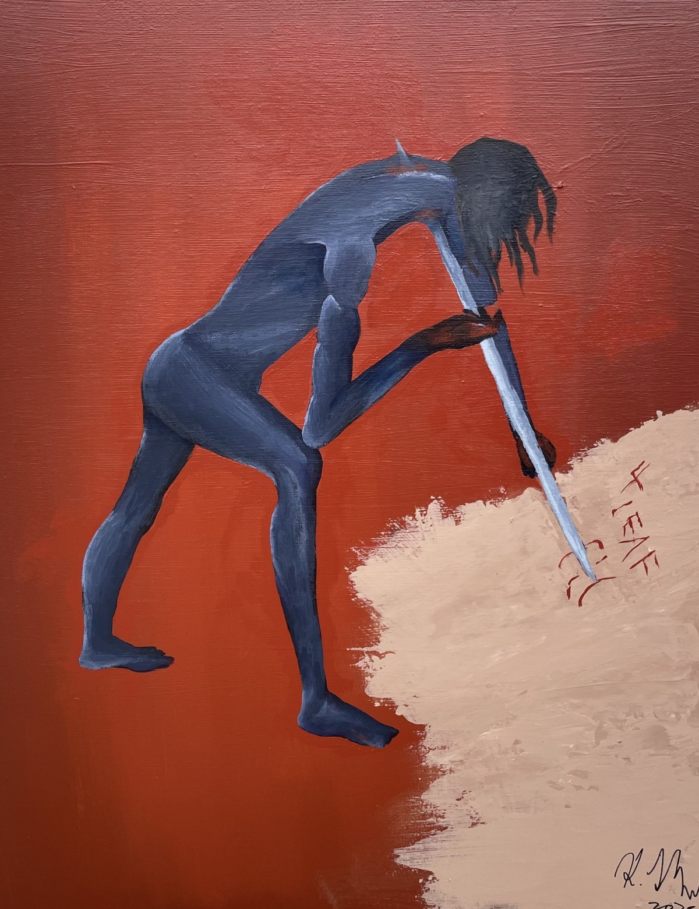
Cloud To Soil
2023
Acrylic on canvas
A dark blue figure bends forward against a rust-red field, arm extended into a thick patch of layered, dragged acrylic. The pale "soil" is built through repeated gestures, left rough and unresolved. Keo uses the physical weight of paint to anchor abstraction, letting the surface carry what language might struggle to hold. Cloud To Soil comes from taking old, heavy experiences and refusing to leave them floating in your head. Here they're dragged down into the ground instead — pressed into a place where they can act like compost, feeding whatever decides to grow next.
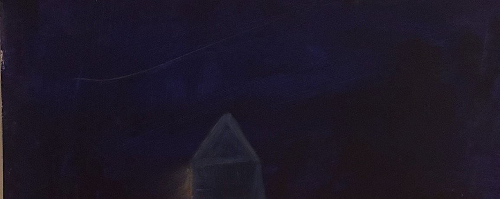
The Little Blue House
2025
Acrylic and oil pastels on canvas
Working from a found photograph, Keo reduces the scene to its essential elements: a field, a deep blue sky, and a single glowing blue house in the distance. The house is blocked in with acrylic, then built up with oil pastel until the color pushes past natural, reading more as signal than structure. A small figure stands back and observes. The work folds looking into considering, watching a life lit up across the grass before deciding what comes next.
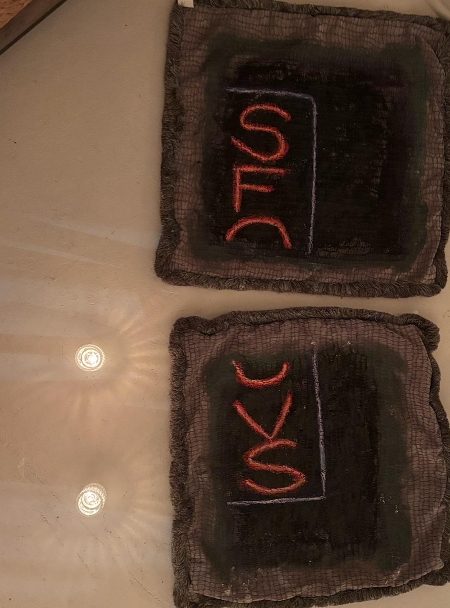
First Night At Home
2025
Acrylic and oil pastels on pillowcase
By painting directly onto pillowcases, Keo transforms functional objects into surfaces for memory and intimacy. The red letters emerge through layered acrylic and oil pastel, their glow recalling signage but subdued by the fabric's domestic softness. Here, the artist uses materials and text to evoke a threshold moment — one where unfamiliarity quietly settles into something closer.
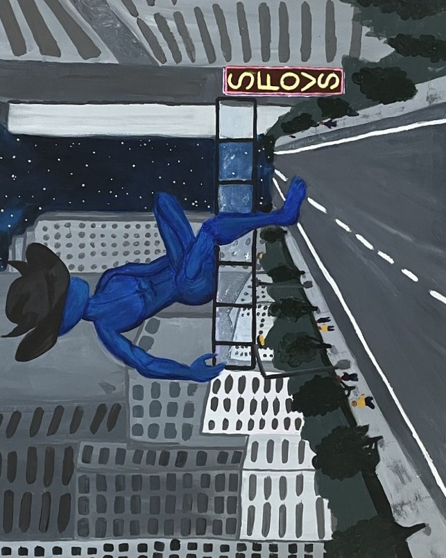
Process
2025
Acrylic on duck cotton
Laid flat in the studio for months, this unstretched duck cotton has accumulated test marks, wiped brushes, dropped pastels, and overspray from other works. Angles of color stop abruptly where canvases once sat, leaving ghost borders and overlapping sweeps of paint. Nothing here was planned, but every layer records a decision made elsewhere in the studio. Keo reframes the drop cloth as the main event, a single surface that holds the accumulation and rhythm of building an exhibition.
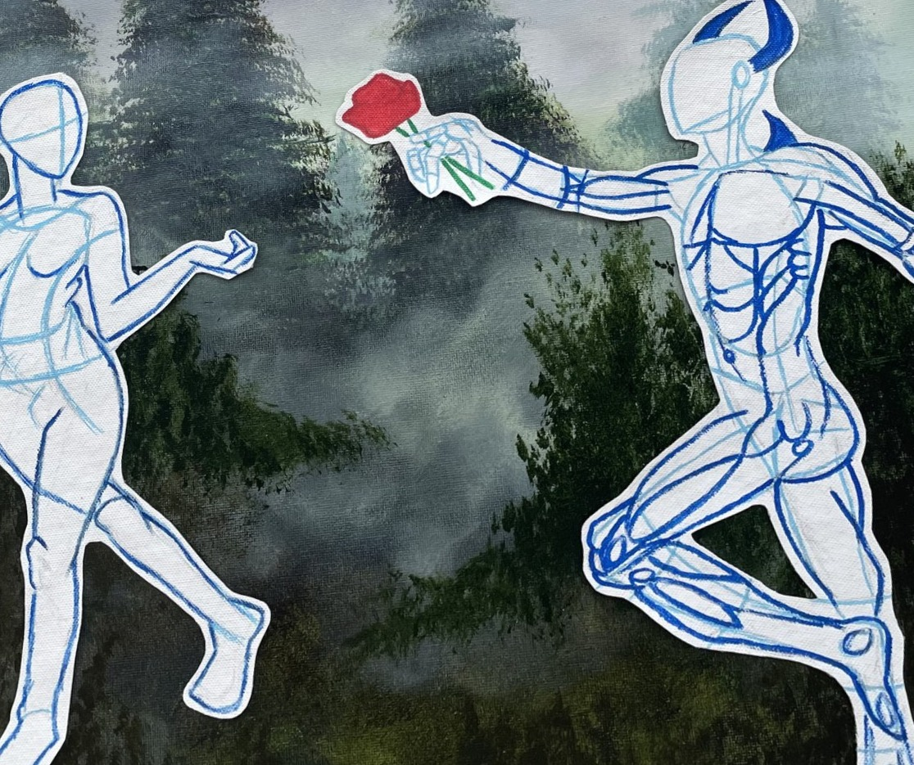
Untitled
2025
Acrylic on canvas
Two outline figures stand against a misted forest, rendered as blue contour drawings atop a softly painted ground. One offers a red rose; the other appears mid-step, hand raised, uncommitted. The composition holds the pair in a moment of proposition and hesitation — bodies drawn in the vocabulary of anatomical study, as if the relationship itself is still being diagrammed.
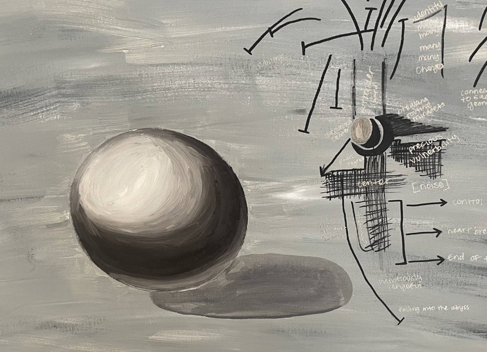
Hero's Journey
2022
Acrylic on canvas
On the left, a sphere sits carefully shaded against a muted, cloudy ground. On the right, that same sphere is pulled apart into a chart of arrows, notes, and pathways. Keo treats the process of understanding as a visual problem: beginning with something simple and solid, then overworking it into a diagram of possible outcomes. The split composition mirrors the way introspection can become recursive, mapping and remapping until the original form is nearly obscured.
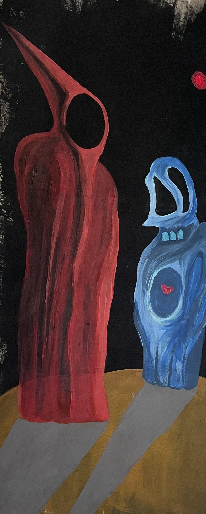
Love and Vulnerability
2025
Acrylic on canvas
Two figures — one red, one blue — stand on a gold sphere suspended in darkness, a small red orb hanging above them like a signal or a wound. The red figure towers, elongated and pointed, its posture sharp and closed. The blue figure is softer, shorter, its body open with a small heart visible at center. Keo stages the encounter as an anatomy of opposites: armor beside exposure, height beside tenderness, silence beside the willingness to be seen. The raw canvas edges remain visible, grounding the image in its own making.
An animated short film script, staged in the exhibition as a printed object with candles and a single rose. The full text is presented below in its original format.
SFOVS · Animated Short Film
The Blue Cowboy & The Blob
A creaking METAL SIGN flickers, its letters half-burned, half-sparking. The name "SFOVS" jitters in neon before fading to a sullen hum.
The horizon is a reddish-orange wash. Thick atmosphere. The world holds its breath. No wind. Only stillness.
Bright, color-contrasting blue feet step into frame. A brimmed HAT that throws the face into shadow. We never see the eyes.
This is THE BLUE COWBOY. Completely blue. Humanoid but otherworldly. His jaw is the only facial feature visible beneath the hat's shadow.
He walks up to a small DATE-STYLE TABLE with TWO CHAIRS through the emptiness, a ritual in the middle of nowhere. It's the same table he's known all his life, a fixture of his home world.
He removes his hat with slow ceremony. Places it on the empty chair. Sits in the other.
A beat of quiet. Dust moves in slow motion through the air. The distant hum of the sign.
Something falls from the heavens — a GLISTENING BLOB hits the ground with a soft, wet THUD.
The Cowboy snaps up, grabbing his hat and pulling the brim low. Armor against exposure.
WIDE SHOT: The TABLE in the foreground. The BLOB a few yards away. The Cowboy centered like a singular monument in the endless plain.
He approaches slowly. The Blob has a faint humanoid suggestion but refuses any fixed shape. Yellow. Translucent. Color pools and retracts within it, like breathing paint.
The Cowboy lifts it upright. It slumps, boneless. Collapses again.
He turns to go.
Behind him a sly motion. The Blob opens a slitted "eye," then winks.
It surges forward with sudden childlike energy, rushing toward him.
PASSES THROUGH HIS CHEST in a soundless shockwave of color.
The Cowboy staggers. His hand goes to his chest.
CUT TO BLACK.
EXT. ABANDONED ROOFTOP — DAWNThe Cowboy gasps awake beneath a drooping TARP. He claws for his hat and yanks it low. Breathing hard, he scans the jagged skyline and the ruined ledge.
He scoots backward into RUBBLE knees to chest, half-concealed by trash and torn plastic. Dust drifts in the slanted light. His breath condenses, then disappears.
A silence beyond silence.
He peers at his own hands. A faint shimmer travels under the skin. Ink in water. He clenches his fists. The shimmer subsides.
ANGLE FROM ABOVE: A single figure on a wide, forsaken roof. The city below looks far away, like a model.
TIME-LAPSE: The moon waxes and wanes. Shadows slide across the tarp. The tarp flaps, then stills.
The Cowboy hasn't moved. A posture of stubborn stillness that masquerades as control.
At last — a twitch. He rolls his shoulders. Stretches his neck. The body betrays the myth of stasis.
He crawls out of the rubble. Knees scratch on gravel. He begins collecting stray MATERIALS from the trash: a bent rebar, a splintered plank, a discarded table leg, a rectangle of weathered glass.
He assembles them with patient, improvised logic — recreating the TABLE from his home planet, a piece of a familiar world built from salvage. It's his one comfort in a foreign landscape. A comforting memory rendered in salvage.
A ripple runs across his body invisible to all but us. Color leaks from beneath the skin, then retreats. He breathes it back down.
He sets his hat carefully on the makeshift tabletop, weighted to keep it from blowing away. Safe again.
EXT. ABANDONED ROOFTOP — NIGHTWind drags across the roof — low, metallic. The DATE TABLE waits between two chairs. Two glasses. One hat. The ritual rebuilt.
The Cowboy steps forward. Hat low. Eyes unseen. He sets a small TRANSMITTER on the table — cracked, handmade, held together by wire and belief.
He turns the dial like a rosary, fingers trembling over the knobs. A prayer disguised as a signal.
He turns the dial. Static. Then a faint, pulsing tone — one-two, one-two.
He listens. Nothing. He exhales, adjusts again. The hum sharpens, steadies — a signal clawing its way through noise.
From the corner, the BLOB stirs.
It drifts closer, shape shifting, drawn to the sound. The Cowboy keeps tuning not out of curiosity, but need. This isn't play. It's a call for help.
Cowboy
(under breath)
Come on.
The tone flickers. Then stabilizes. The Blob hums back matching the rhythm, soft and eager.
He looks up.
The Blob glows, pulsing in perfect time. For the first time, the Cowboy hesitates. He adjusts one last time gently, as if he's afraid of breaking whatever's forming.
Harmony.
A single note clean, full, impossible. The transmitter lights flare.
The table trembles.
For a second, the rooftop hums like a living thing. Then, blaring feedback. A jagged shriek splits the night. The glasses rattle. Water vibrates.
The Cowboy jerks back, grabs the dial, but the sound fights him as if the signal won't let go.
The Blob grows brighter, panicked but trying to help — pouring more of itself into the transmission.
The feedback rises, higher, harsher until the rooftop seems to bend around it.
The Cowboy slams his palm on the table — the device jumps, wires sparking.
POP.
A burst of white light. Then silence — but the hum lingers inside him.
He stumbles back, breath ragged. The Blob dims, trembling. A small sound escapes it — an apology made of radio.
The Cowboy's body flickers — faint blue light under skin. The signal's moved into him. His chest beats in electric rhythm.
He grips the edge of the table. The hat shadow shakes.
The Blob doesn't understand. It reaches for him, terrified. Its glow brightens and the frequency between them spikes. The TRANSMITTER REACTIVATES on its own — lights flaring red, glass vibrating off the table.
The Cowboy lunges to pull the plug but the Blob surges forward, desperate to help.
COLLISION.
Sound and light explode outward — a flash that turns the night white.
The Cowboy is thrown backward — the DATE TABLE SHATTERS, glasses bursting into shards of light and water.
The Blob folds inward, color imploding, then expands a pulse that knocks the wind from the world.
The Cowboy hits the ground hard, chest glowing, still shaking. The transmitter rolls to the edge, its hum dying in static.
Silence.
Smoke.
Wind again.
The Blob crawls toward him faint, flickering, a wounded animal trying to understand what it broke.
The Cowboy doesn't move.
Then, faintly the SFOVS sign flickers once. Twice.
Then stays lit. The Blob pauses. Looks at him. Looks at the sign. The hum fades.
CUT TO BLACK.
A single breath uneven, electric — breaks the silence.
We don't know who it belongs to.
FADE IN:
EXT. ABANDONED ROOFTOP — PRE-DAWNGray light. The space between night and day. The rooftop is destroyed. Broken glass. Splintered wood. The table in pieces.
A figure lies motionless near the ledge. The hat rests a few feet away. Overturned. Empty. The figure doesn't move.
Far below, the city begins to hum with morning. The sign in the distance flickers on. Off. On.
The figure's hand twitches. Just once.
Then still again.
HOLD on the destroyed rooftop.
THE END
For inquiries regarding available works from Shots Fired on Valentine St., please write to the office.